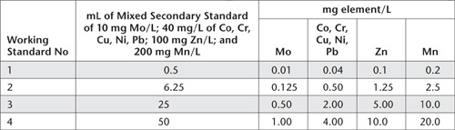

This method follows US EPA Method 3051A (2007), which is a modification of US EPA Method 3050B (1996). It uses a microwave assisted reverse aqua regia digest. Samples and acids are placed in a microwave vessel (PVA or TFM) and the vessel sealed and heated for a specified time. The digest used in this procedure is intended to provide a rapid multi-element acid extraction or dissolution prior to analytical determinations, which can be made using ICPAES, ICP-MS, or GFAAS.
The method is suitable for determinations of Al, As, B, Cd, Ca, Cr, Co, Cu, Fe, K, Mg, Mn, Mo, Na, Ni, P, Pb, S and Zn, with all of these (except Cd) suited to instrumental analysis by ICPAES. Cd at trace concentrations and lower is best determined by ICP-MS or GFAAS. Other analytes, including Sb, Ba, Be, Hg, Se and Ag, are not described, but are possible using the digestion described, along with analytical ‘finishes’ such as hydride generation, cold vapour generation, GFAAS, etc.
The method is similar to Method 17B1, except it uses microwave digestion rather than a block digester. Also, the final soil/digest-solution ratio is 1:100, rather than 1:50 as in Method 17B1. When the same analytical wavelengths defined in Method 17B1 (Table 17.4) are used, however, similar estimates of LORs and uncertainty of determinations can be expected for elements covered by this method. For As and B, the wavelengths 189.0 nm and 249.7 nm are suggested and LORs of 5.0 mg As/kg and 5.0 mg B/kg should be achievable.
As for Method 17A2 and Method 17B1, all apparatus and equipment must be designed specifically for safe use in laboratories. Moreover, safety glasses, gloves and lab coats must be worn when handling acids, acid digests, standard solutions and other chemicals. All operations involving the transfer or dilution of acids should be carried out in a fume cupboard or in a lamina-flow hood. Pipetting of solutions by mouth must not occur.
Laboratory Microwave System and Digestion Equipment
As for Method 17A2. Also refer to Kingston and Jassie (1988) and Kingston and Haswell (1997) for more details. In addition, all digestion vessels and volumetric ware must be carefully acid washed and rinsed with deionised water (see Note 1 of Method 18D1 for guidance). Most manufacturers recommend that every third or fourth digest should be a reagent blank, mainly to clean residues from the inside of digestion vessels. When switching between high concentration samples and low concentration samples, it is recommended digestion vessels be cleaned by heating with 1+1 HCl for 2 h, followed by heating with 1+1 HNO3 for 2 h, before rinsing with deionised water and drying in a clean environment.
As for Method 17B1.
Primary and Intermediate Standards for Most Analytes
As for Method 17B1.
Primary Standards for Arsenic and Boron
1000 mg/L of As and B, respectively.
Use commercially available standard solutions, supported by certificates of analysis.
Intermediate Standard for As and B
40 mg/L of As and B, respectively.
Transfer by pipette 40.0 mL of As Primary Standard and B Primary Standard to separate 1.0 L volumetric flasks. To each add 50 mL of HNO3 and dilute to volume with deionised water. This solution may be stored for up to 6 months in clean, inert reagent bottles.
Working Standards for Most Analytes
As for Method 17B1, except to volumetric flasks add the equivalent of 90 mL of HNO3 and 30 mL of HCl to 500 mL with deionised water. All acids should be ultra-pure or sub-boiling distilled.
Working Standards for As and B
Prepare these in the same way and over the same range as for Working Standards for Co, Cr, Cu, Ni and Pb described in Method 17B1, including Table 17.5. The 500 mL volumetric flasks should contain the equivalent of 90 mL of HNO3 and 30 mL of HCl. Mix and make to volume with deionised water.
Calibration Blank
Prepare from the same reagents and deionised water, equivalent to 90 mL of HNO3 and 30 mL of HCl to 500 mL. Mix well and store in a clean, inert reagent bottle.
Prepare dry sub-samples of air-dry (≈40°C) of soil/sediment and mill to <0.05 mm in a Zirconia (strongly recommended to avoid trace metal contamination) ring and puck head and compatible ‘shatterbox’, as described in Method 17B1.
Weigh 0.50 ± 0.01 g of a well-mixed sample of <0.05 mm particle size into an appropriate microwave vessel equipped with controlled pressure relief mechanism. Add 9 ± 0.1 mL of HNO3 and 3 ± 0.1 mL of HCl to the vessel in a fume hood. If a vigorous reaction occurs upon the initial addition of reagents (as will occur if carbonates are present) or the sample is suspected of containing easily oxidizable materials, allow the sample to predigest in the uncapped digestion vessel. The analyst should wear a laboratory coat, protective gloves and face protection.
The temperature of each sample should rise to 175 ± 5°C in approximately 5.5 min and then remain at that temperature for a further 4.5 min. Due to the rapid advances in microwave technology, follow the manufacturer’s recommended instructions on their microwave digestion system, including the number of vessels that can be run at the required temperature of digestion. When fewer than the recommended samples are to be digested, the remaining vessels should be filled with the same blank acid mixture to ensure a ‘normal’ energy balance in the microwave.
Allow the vessels to cool for 5 min before removing them from the microwave. Double-check that the microwave vessels have maintained a seal throughout the digestion; consult the manufacturer’s recommendations on how best to do this. Repeat any digestions where the seal has been breached.
Subsequently, vent all microwave vessels in a fume hood before uncapping, thus avoiding a rush of acid vapours. Quantitatively transfer the sample to an acid-washed 50 mL graduated centrifuge tube and dilute accurately to 50 mL with deionised water. Centrifuge for 15 min at 1500 rpm. Decant about 10 mL of each clarified digest solution into 10 mL polyethylene centrifuge tubes or as suited to the auto-sampler of the ICPAES.
Set up and operate the ICPAES according to manufacturer’s instructions. Check calibration drift on a regular basis and recalibrate/normalise if necessary. If an unknown analyte concentration exceeds that of the highest working standard, dilute the sample digest with Calibration Blank and repeat the determination and record the dilution ratio.
Alternatively, set up a GFAAS or ICP-MS according to the manufacturer’s instructions for the determination of Cd.
In the case of ICP-MS, dilute 2 mL of each clarified soil digest solution with at least 8 mL of 0.1% HNO3, to reduce total soluble salts to an acceptable level. (Make allowance for this dilution when calculating results.) Also check for instrument response/performance, using the 10 μg/L Mix v Tuning Solution. All instrument performance criteria should be confirmed at this point. Mix the 70 μg/L In Re and Sc Internal Standard with each standard and diluted sample extract in the proportion 0.42 mL/min of Internal Standard to 0.6 mL/min of diluted digest solution during operation of the ICP-MS. (This is used to compensate for drift.) Also, check a reference solution every 10 samples and recalibrate if drift exceeds 10%. If analyte concentration exceeds the standard calibration range, dilute the clarified soil extracts with calibration blank and repeat relevant determinations. See Note 4 of Method 18D1 for guidelines on key ICP-MS settings.
To calculate mg/kg of analyte in soil, multiply the instrumental result in mg/L by 100 (assumes 0.5 g sample to 50 mL final volume). To report concentrations in % as is often required for Al, Ca, Fe, Mg, P and S, divide mg/kg by 104. Also account for any subsequent dilutions of sample digests.
Report elemental concentrations (% or mg/kg of element) on an oven-dry basis. Use the air-dry moisture to oven-dry moisture ratio to convert to an oven-dry concentration. Refer to Method 2A1 for guidance with regard to this soil moisture calculation.
1. For each batch of 36 or fewer samples, include an analytical reagent blank. This should pass throughout the entire sample preparation and analytical process to assess any contamination during sample digestion and analysis. In addition, at least one spiked sample should be processed with each analytical batch of 36 or fewer samples. These ‘spikes’ should be added to the digestion vessel immediately after the addition of acids.
Table 17.4. Examples of ICPAES analytical wavelengths and expected performance characteristics of Method 17B1.
Analyte |
Wavelength (nm) |
Uncertainty (%)# |
LOR |
Al |
394.4 |
10–15 |
0.003% |
Ca |
430.25 |
8–10 |
0.003% |
Cd |
228.8 (GFAAS) |
25 |
0.02 mg/kg |
Co |
231.16 |
15 |
1.0 mg/kg |
Cr |
267.7 |
15 |
6.0 mg/kg |
Cu |
219.96 |
6–8 |
5.0 mg/kg |
Fe |
240.5 |
15 |
0.007% |
K |
766.5 |
10–15 |
0.04% |
Mg |
383.8 |
8–10 |
0.001% |
Mn |
257.6 |
10–15 |
1.0 mg/kg |
Mo |
202.0 |
10–15 |
3.0 mg/kg |
Ni |
227.9 |
15 |
5.0 mg/kg |
P |
177.4 |
10 |
0.001% |
Pb |
220.3 |
15 |
5.0 mg/kg |
S |
181.97 |
15 |
0.001% |
Zn |
213.86 |
15 |
6.0 mg/kg |
Table 17.5. Volumes of Secondary/Intermediate Standard (A) for the preparation of 500 mL of Mixed Reverse Aqua Regia Working Standards for Mo, Co, Cr, Cu, Ni, Pb, Zn and Mn and the concentrations of those Working Standards.
